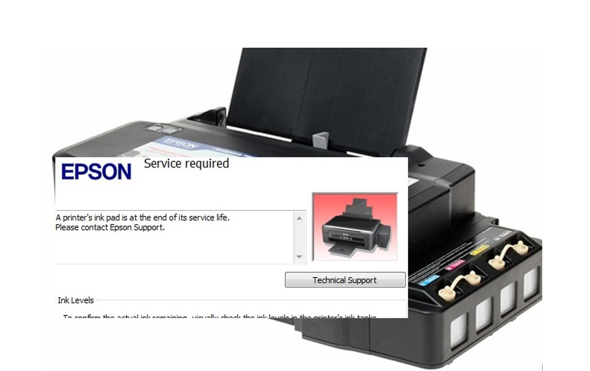
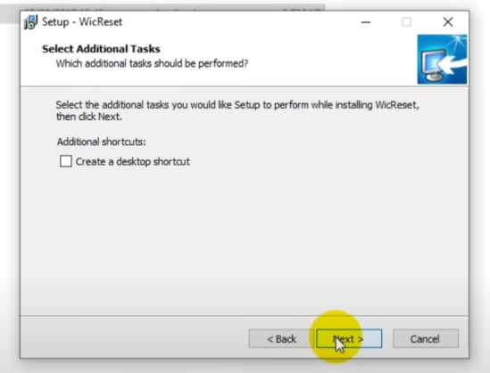
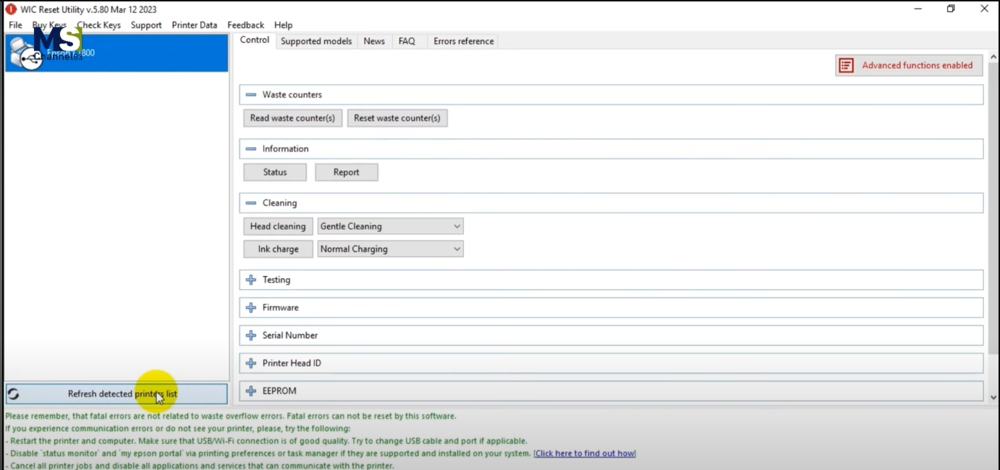

Penjelasan Masalah
Saat tidak bisa mencetak pada printer terutama epson dengan indikator lampu merah Berkedip harus dilakukan reset menggunakan aplikasi pihak ketiga berikut caranya.
Langkah Penyelesaian
- Untuk Mengatasi tidak dapat print, printer harus direset menggunakan aplikasi pihak ketiga disini kita akan menggunakan WIC. 
- Search pada google WicReset download kemudian install seperti biasa. 
- Jika sudah terinstal buka wicreset kemudian ikuti langkah-langkahnya, untuk selengkapnya dapat melihat pada video dibawah. 